Einnahmen
Vollständige Posten und Monatsbilanz des gewählten Falls.
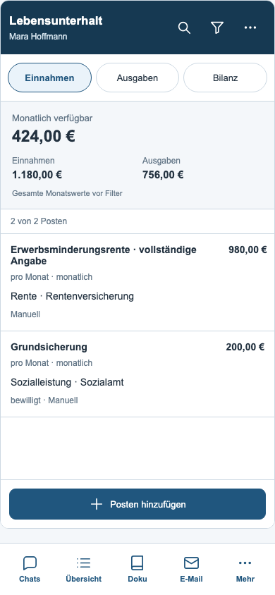
30 tatsächliche Ansichten der umgebauten App mit synthetischen Testdaten. Beide Module verwenden den gemeinsamen mobilen Dokumentationsstil mit eigenen Filtern, vollständigen Formularen und fest erreichbaren Aktionen.
Stand: 07.09.2026 · 93 erfolgreiche Browserprüfungen der neuen Module · 152 erfolgreiche Browserprüfungen der verknüpften Module
Vollständige Posten und Monatsbilanz des gewählten Falls.

Eigene Ausgaben und verknüpfte Schuldenraten in einer Liste.
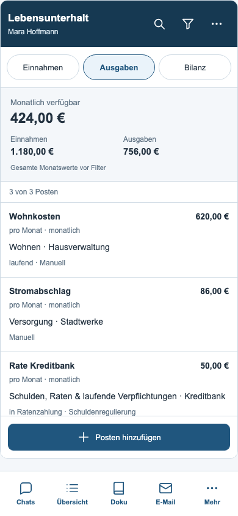
Gespeicherte Monatsbeträge nach Kategorien; Einnahmen, Ausgaben und verfügbarer Betrag.
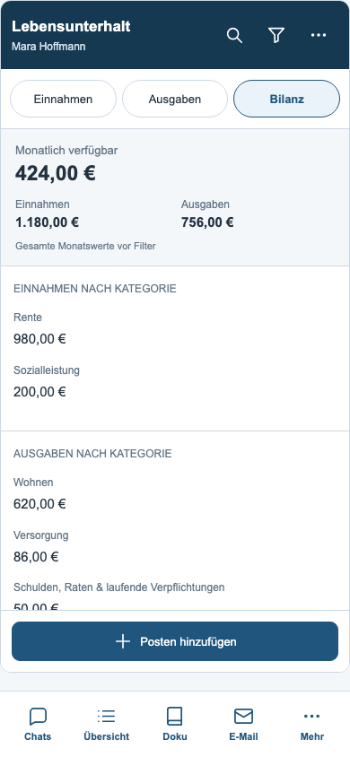
Kategorie, Zahlintervall, Status, Herkunft und Sortierung.
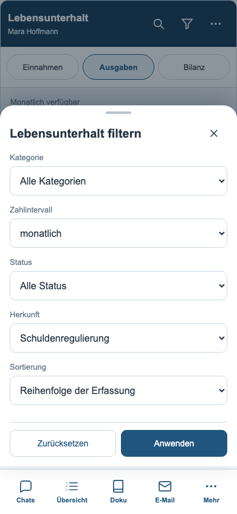
Alle ursprünglichen Felder und zusätzlich vorhandene Bescheidangaben.
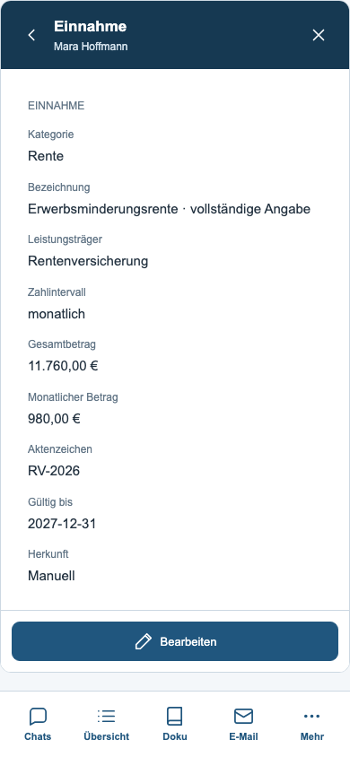
Geschützter Entwurf mit den sechs bestehenden Eingaben.
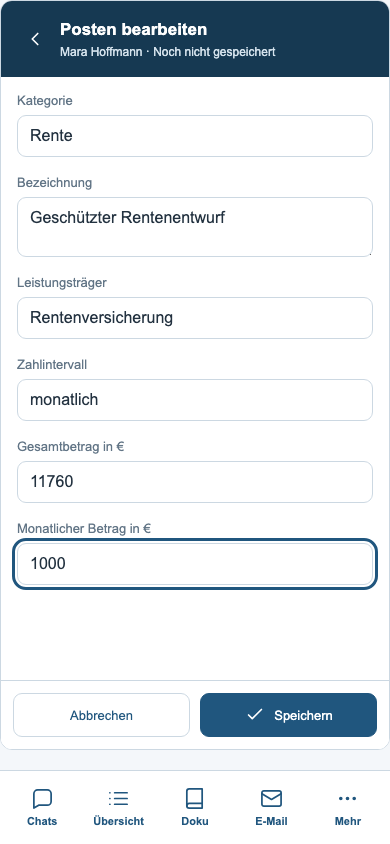
Die Ausgabenmaske enthält zusätzlich Status und Ende der Ratenzahlung.
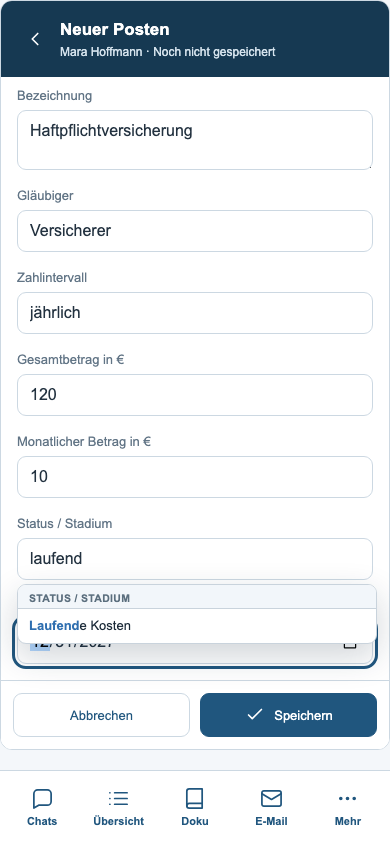
Die Herkunft ist sichtbar; Änderungen erfolgen weiterhin in der Schuldenregulierung.
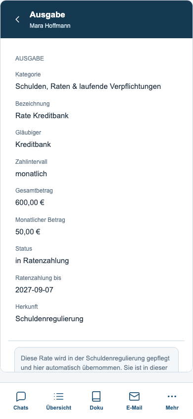
Vorschläge einzeln auswählen; die Übernahme speichert erst nach Bestätigung.
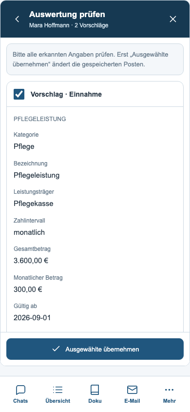
Unterlagen auswerten, Leistungen laden, Berichtsübergabe und Fallwechsel.
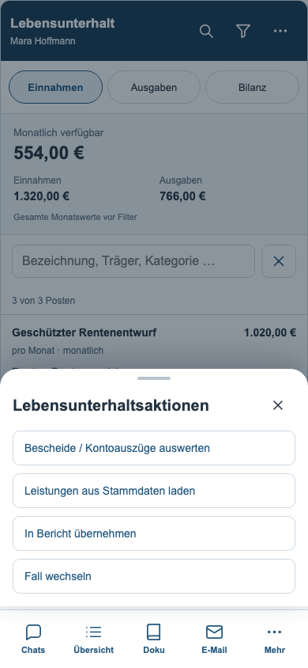
Tastatursimulation: Navigation ausgeblendet, Formularaktionen erreichbar.
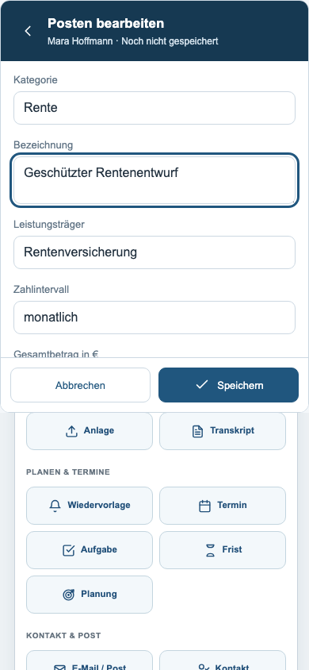
Gemeinsame Farben und klar gegliederte Listen.
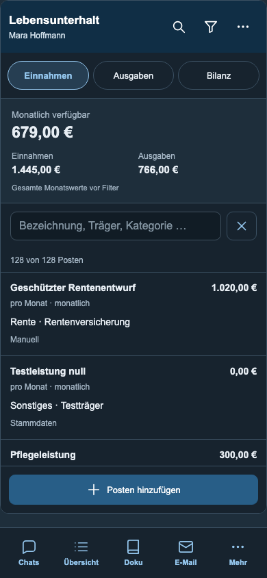
Restschuld, Forderung, gezahlter Betrag und monatliche Raten der Auswahl.
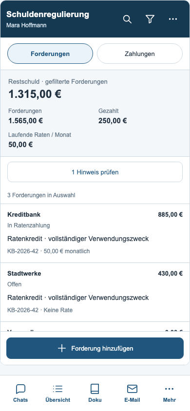
Zahlungen aller Forderungen mit Datum, Betrag und Zahlungsweg.
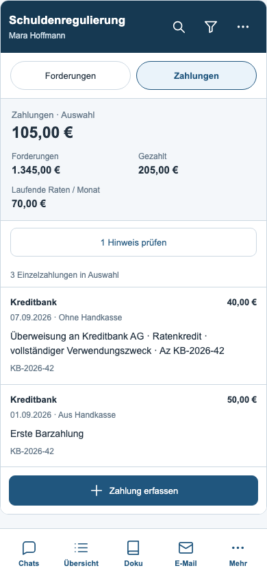
Fallumfang, Historie, Stadium, Gläubiger, Zahlungsstand und Sortierung.
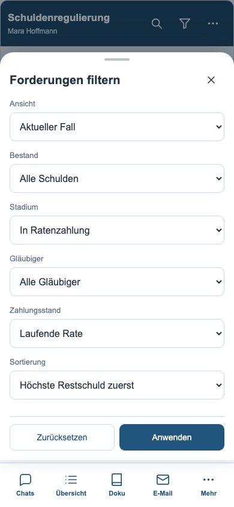
Zusätzliche Eingrenzung nach Jahr und Barzahlung aus der Handkasse; das Blatt ist scrollbar.
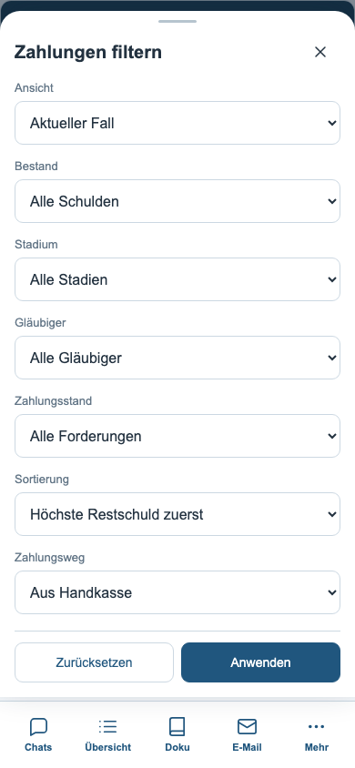
Vollständige Kosten, Raten, Bankdaten und Notizen sind über die Detailseite erreichbar.
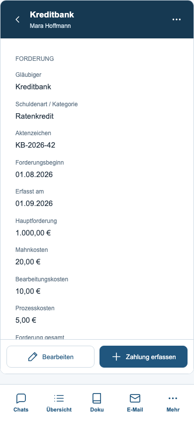
19 ursprüngliche Eingaben in den Abschnitten Forderung, Ratenplan, Empfängerbank und Notizen.
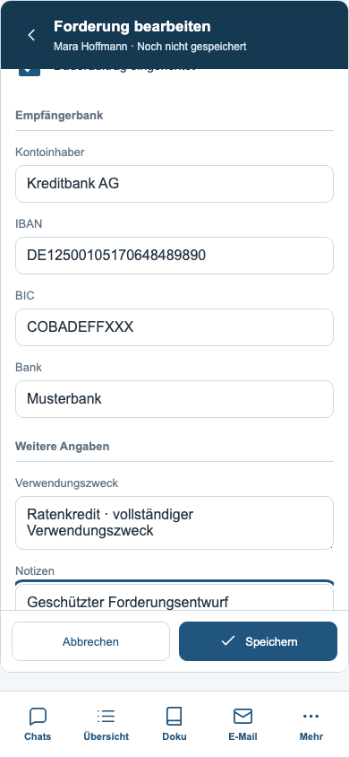
Datum, Betrag, Hinweis und ausdrückliche Zuordnung zur Handkasse.
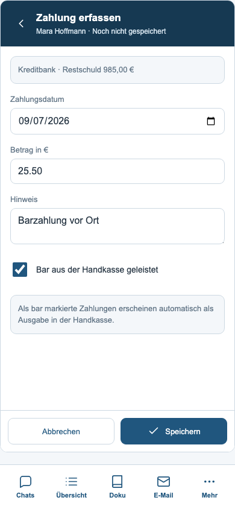
Einzelzahlung prüfen, bearbeiten oder nach Bestätigung löschen.
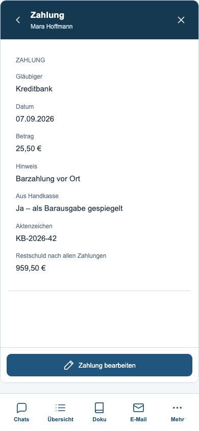
Status, Fristenverknüpfung und weitere vorhandene Aktionen.
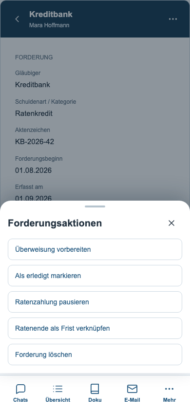
Beispiel: Ein Dauerauftrag ist trotz erledigter Forderung noch aktiv.
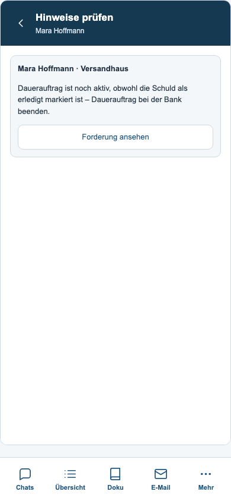
Empfänger- und Auftraggeberdaten, Intervall und Dokumentationsoptionen im mobilen Formular.
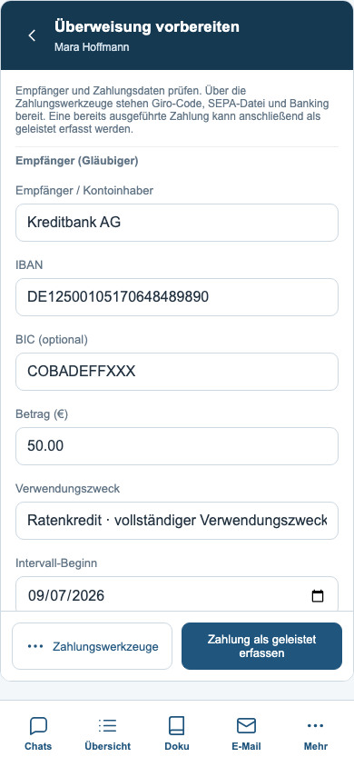
Giro-Code, SEPA-Datei und Übergabe an den Banking-Entwurf.
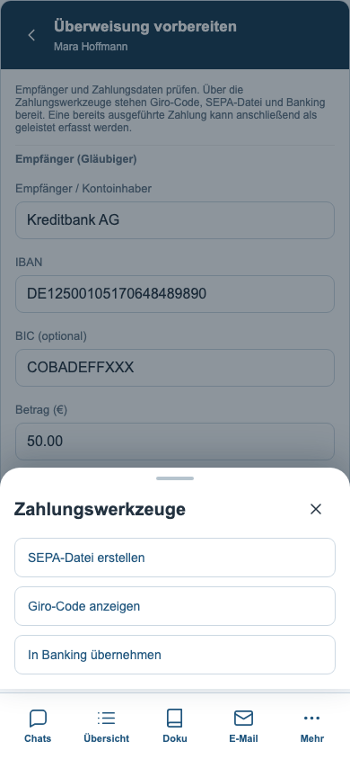
Tatsächlicher EPC-Code des bestehenden Generators mit synthetischen Zahlungsdaten.
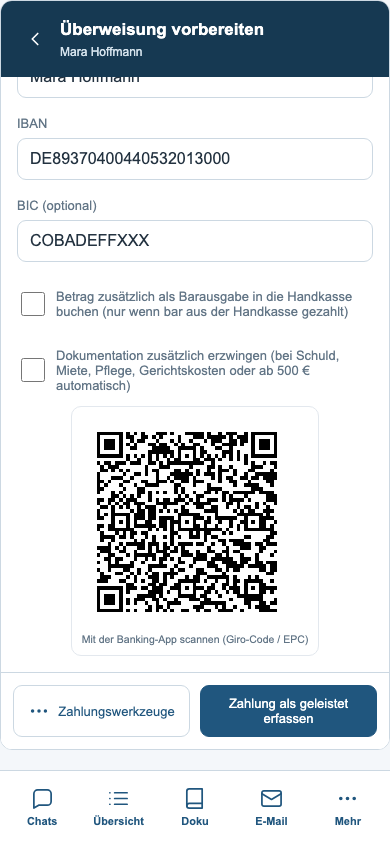
Der bestehende Intervallentwurf erhält die eingetragenen Zahlungsdaten.
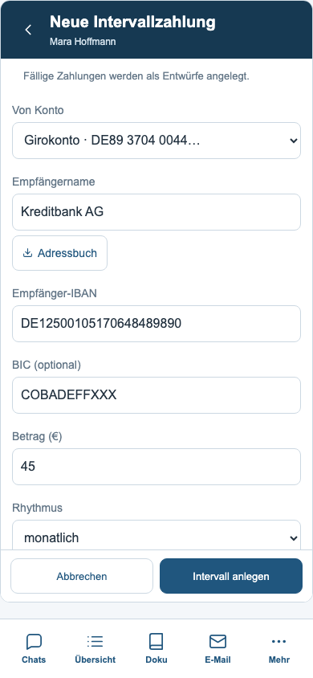
Lokal ausgelesenes Test-PDF; erkannte Forderung zunächst als bearbeitbarer Entwurf.
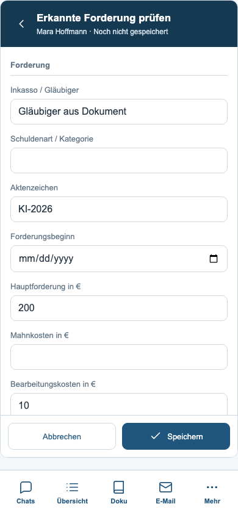
Fallbezogene Übersicht; fremde Forderungen vor dem bewussten Öffnen nur lesen.
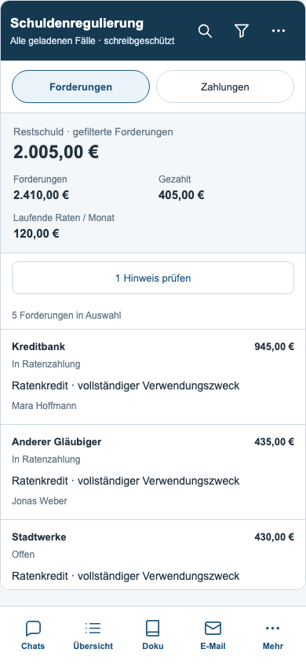
Tastatursimulation: Eingaben und Speichern bleiben erreichbar.
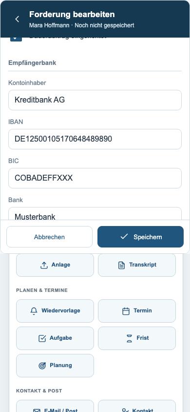
Listen, Summen und Aktionen bei dunkler Darstellung.
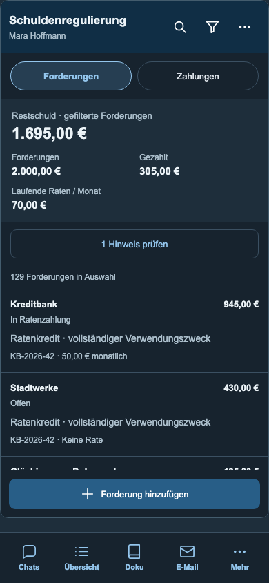